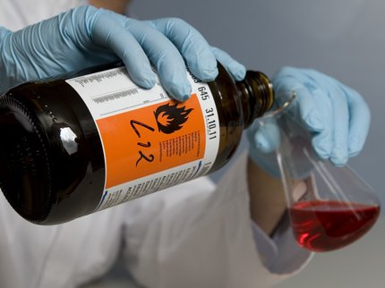

Новости
Почему большинство иностранцев брезгуют гречкой?
Конечно, РФ - не единственная страна в мире, где любят гречку. Однако именно здесь к этой крупе люди относятся с наибольшим уважением. Во многих же странах Западной Европы гречку просто ненавидят, считая ее совершенно несъедобной.
Читать полностью...
Гречка практически всегда росла на территории РФ, главными регионами ее произрастания был Алтай и некоторые регионы Сибири. Известно, что гречку выращивали издревле и в Северной Индии, а также Гималаях. Именно в этих регионах археологам и сейчас удается находить окаменелые зерна гречневой крупы. И это неудивительно, ведь гречка довольно неприхотливая культура, дающая приличные урожаи даже на бедных почвах. Интересно, но гречка обладает ещё одной уникальной особенностью, которая позволила завоевать ей многие страны – растение самостоятельно вытесняет «конкурентов». Речь, конечно же, идет о сорняках, которые просто не в состоянии подавить развитие этой зерновой культуры. Именно из-за своей неприхотливости для нас гречка стала основной зерновой культурой уже с 7 века.
Слово гречка наводит на мысль, что название крупы имеет греческие корни. В Греции действительно давно знают эту культуру, но вот питались "черной кашей" там исключительно бедняки. Греческие миссионеры, приехавшие на территорию Руси помогли местному населению познакомиться с выращиванием «византийского зерна». Неприхотливая зерновая культура пришлась по вкусу славянам, что сделало ее одним из основных составляющих рациона.
В азиатских странах гречку тоже едят, но гораздо менее охотно, чем в России. Так в Японии из нее делают вкусную лапшу, а в Корее пекут традиционные булочки. А вот в Китае гречку потребляют довольно охотно. Но китайская гречка по каким-то причинам имеет очень низкое качество, поэтому ее обычно закупают извне. Особенно ценят китайцы гречку в своей народной медицине, где крупу просто заваривают кипятком, а потом пьют полученный целебный отвар...
Что же касается Западных стран, то в большинстве из них гречку просто ненавидят. Однако крупа выращивается и здесь, а все из-за своей неприхотливости и питательности, что на руку скотоводам, которые охотно используют гречку как корм для животных. Сами же люди не понимают вкуса гречневой крупы, считая его химическим и горьким.
По мнению некоторых диетологов, вкус гречки может нравиться, если вы к нему привыкли с самого детства. А вот есть чудо-кашу обязательно нужно, так как она действительно благотворно влияет на наше здоровье: нормализует давление, холестерин и уровень сахара в крови, повышает гемоглобин и благотворно влияет на иммунитет.
В США могут узаконить превращение человеческих останков в удобрения
Первым штатом, где это произойдёт, может стать Вашингтон. Там намерены, помимо кремации и погребения, легализовать и компостирование человека.
Читать полностью...
В США могут узаконить превращение человеческих останков в удобрения. Новым законопроектом предполагается «перекомпоновывать» человеческие останки, применяя особую технологию. Она приведёт к ускорению разложения тела и превращению его в почву, богатую питательными веществами. Почва, по желанию родственников, может возвращаться им. Законопроект поддержан сенатором Джейми Педерсеном. Политик сообщил, что к нему поступило много писем, в которых люди сообщали, что очень хотели бы «стать деревом» после того, как скончаются и, в любом случае, благодарят за предоставленную альтернативу. При этом она будет значительно дешевле. Если средняя стоимость погребения в США в 2017 году составляла больше 7 тысяч долларов, то за «перекомпоновку» придется заплатить только 5,5 тысячи. Исследования шли на протяжении пяти месяцев. Учёные контролировали разложение шести тел доноров. Процесс мало чем отличается от традиционного компостирования.
Ускорению разложения способствует органика. Периодически в камеру запускали воздух. Он помогал микробам в ускорении разложения. Приблизительно через месяц, в камере осталось немногим более половины кубометра компоста. Особо отмечается положительное влияние такого захоронения на окружающую среду.
Названы самые безопасные авиакомпании мира 2018 года
Центр оценки данных авиакатастроф пассажирской авиации JACDEC (Jet Airliner Crash Data Evaluation Center) ежегодно составляет рейтинг наиболее надёжных авиакомпаний.
Читать полностью...
На первом месте оказалась финская авиакомпания Finnair, рейтинг ее надежности составил рекордные 93,91%, сообщает Der Spiegel. На второй и третьей строчках соответственно расположились лоукостеры - Scoot Tigerair (Сингапур) и Norwegian Air Shuttle (Норвегия). Прошлогодний победитель рейтинга – Emirates из ОАЭ в этом году занял только 4-е место, пятерку лидеров замыкает испанская авиакомпания Air Europa.
В десятку лучших также пробился еще один «представитель» ОАЭ - лоукостер Transavia, принадлежащий авиакомпании Etihad Airways. Кроме того, в 10 лучших были включены: Virgin Atlantic Airways (Великобритания), KLM (Нидерланды), а также Jetstar Airways (Австралия). В прошлом году российские авиакомпании тоже попали в этот рейтинг. Так «Аэрофлоту» досталось 79-е место, а S7 Airlines расположился в самом конце списка, лишь на 95-м месте... Какие позиции российских авиакомпаний в этом году пока не сообщается, так как рейтинг пока не опубликован целиком, но уже точно известно, что отечественные перевозчики занимают здесь «почетные» места в конце этого престижного списка. Самой же опасной для пассажиров признана Garuda Indonesia из Индонезии – с риском не вернуться домой 52,11%.
Несмотря на то, что авиаполеты становятся с каждым годом все безопаснее, за прошедший год в авиакатастрофах погибли 562 человека.
Сам же рейтинг JACDEC публикуется уже с 1973 года, он учитывает количество инцидентов, произошедших с самолетами ста крупнейших мировых авиакомпаний. Кроме того, рейтинг берет в расчет и количество служб, контролирующих деятельность авиакомпании в той или иной стране, а также сроки давности того или иного происшествия.
Навального вызвали на беседу: он не удаляет фильм "Он вам не Димон"

Алексея Навального вызвали к судебному приставу, чтобы составить три протокола а неисполнение решений судов удалить фильм "Он вам не Димон" и информацию о бизнесмене Сергее Михайлове. Об этом 13 декабря он написал в своем блоге.
Читать полностью...
Удаления фильма потребовал Алишер Усманов и фонд "Соцгоспроект", а удаления информации о Михайлове добивается сам бизнесмен.
"И вот служба судебных приставов, обеспечивая права и свободы этих замечательных граждан, сообщила, что завтра составит на меня протоколы, которые потом передаст в суд, а суд и посадить может. Ну с моим опытом общения с судами, не сомневаюсь: посадят", — отмечает Навальный.
Ранее стало известно, что Тверской суд Москвы признал виновным и приговорил к одному году колонии общего режима Дмитрия Борисова за применение насилия в отношении сотрудника полиции во время разгона антикоррупционной акции 26 марта 2017 года "Он вам не Димон".